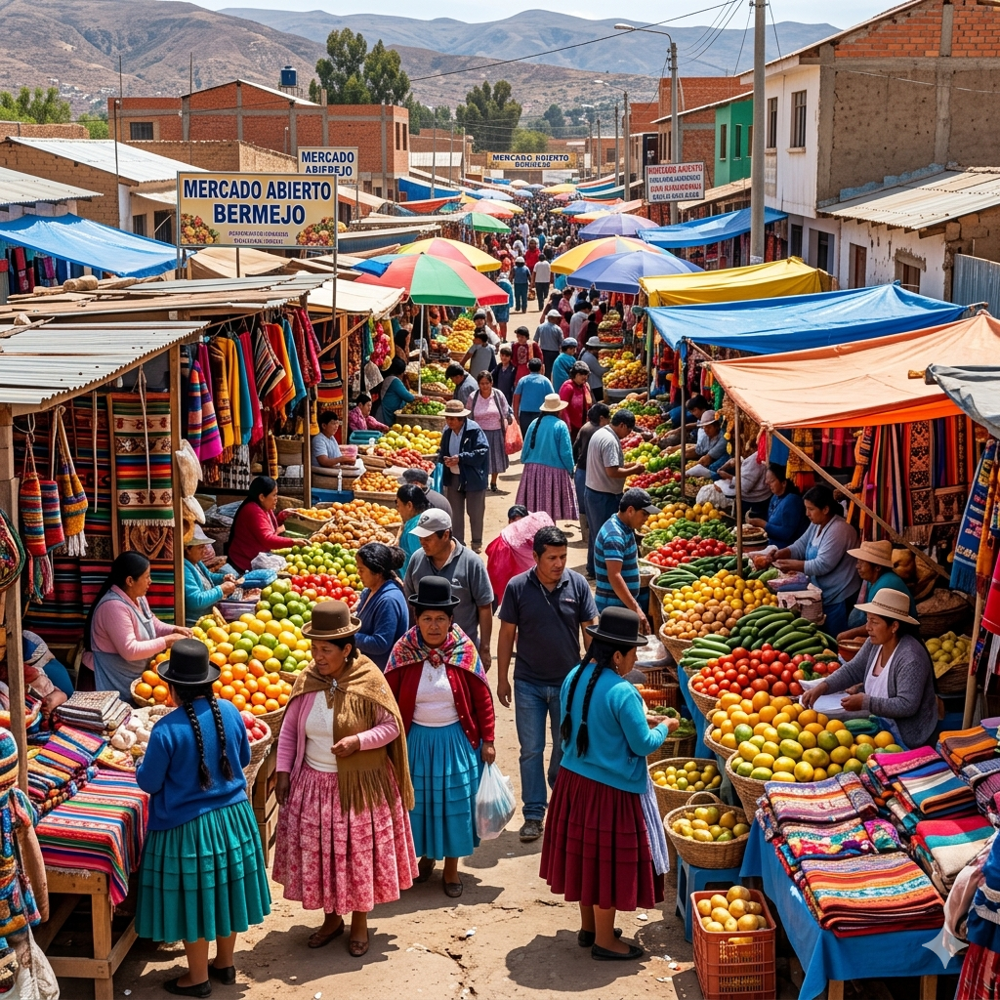

Mercado Central de Bermejo: Guía turística y comercial

El Mercado Central de Bermejo es el corazón comercial de la ciudad. Es donde sucede la magia: desde casas de cambio hasta vendedores de ropa, electrónica, comida, artesanías, y mucho más. Si es tu primera vez, puede parecer abrumador. Por eso hemos creado esta guía para ayudarte a navegar el mercado como un local.
¿Dónde está el Mercado Central?
El mercado está en el corazón de Bermejo, a poca distancia de la chalana. Desde que bajas de la balsa:
- Camina hacia el norte (hacia el interior de la ciudad).
- Pasarás por calles comerciales con negocios pequeños.
- El mercado es un complejo de varias manzanas con tiendas y puestos.
- Tiempo a pie desde chalana: 5-10 minutos.
Señales: Sigue a la multitud. El mercado siempre está concurrido, no te perderás.
Estructura del mercado
El mercado no es un edificio único, sino un área comercial con varias secciones:
Sección 1: Casas de cambio (la más importante para turistas)
Concentradas en varias cuadras alrededor del "núcleo" del mercado. Decenas de operadores, muchas casitas pequeñas. Aquí cambias dinero, compras dólares, o vendes bolivianos.
Sección 2: Ropa y accesorios
Tiendas de ropa, zapatos, bolsas, accesorios. Muy variado y precios bajos. Muchos puestos informales (gente vendiendo desde mesas).
Sección 3: Electrónica y accesorios
Celulares, cables, auriculares, baterías. Tiendas más formales, algunos con mostrador.
Sección 4: Alimentos y bebidas
Frutas, verduras, especias, bebidas alcohólicas, comida preparada. Está junto al "mercado de frutas y verduras" que es literal (un área al aire libre con vendedoras de productos frescos).
Sección 5: Artesanías y souvenirs
Tejidos andinos, cerámica, minerales, objetos típicos. Esparcido por varias tiendas pequeñas.
Horario del mercado
- Apertura: Generalmente 7:00-8:00 AM
- Cierre: Generalmente 17:00-18:00 PM
- Descanso mediodía: Algunos negocios cierran 12:00-14:00
- Domingos: Horas reducidas o algunos negocios cerrados
Recomendación: Ve entre 9:00-12:00. Es cuando todo está abierto y no es mediodía.
Qué esperar: Ambiente y tráfico
El mercado puede ser abrumador la primera vez. Caracteriza por:
- Muy concurrido: Especialmente en fin de semana. Gente vendiendo, gente comprando, caos controlado.
- Bullicio constante: Voces, vendedores pregonando, música de radios locales.
- Olores mixtos: Comida, especias, cuerpos, todo junto.
- Piso irregular: Hay agua a veces, lodo, cosas en el suelo. Cuidado con dónde pisas.
- Sin señales claras: No hay letreros grandes. Todo es informal.
Consejo: No te asustes. El mercado es seguro si respetas las reglas básicas de seguridad.
Seguridad en el mercado
- Mantén valuables seguros: Cartera en bolsillo frontal o mochila al frente, no a la espalda.
- No muestres dinero: Cambios de dinero en lugares tranquilos, no en pleno mercado.
- Evita calles desiertas: Quedate en áreas comerciales concurridas.
- No lleves joyas llamativas: Anillos de oro, collares grandes, llaman atención.
- Viaja en grupo si es posible: Dos personas es mejor que una.
- Confía en tu instinto: Si algo se siente mal, aléjate.
¿Es peligroso? No más que cualquier mercado urbano. Miles de turistas compran aquí sin problemas cada año.
Cómo cambiar dinero en el mercado
- Llega al mercado (son varias cuadras, no una).
- Busca casas de cambio (pequeñas casitas o mostradores).
- Pregunta en 3-4 casas: "¿Cuál es la tasa hoy?" (dólar, boliviano, etc.).
- Elige la mejor tasa.
- Negocia si quieres: "¿Me das un poco mejor?" A veces dicen que sí.
- Haz la transacción en una zona tranquila, no en el mercado público.
- Verifica el dinero que recibes (especialmente billetes).
Dónde comer en el mercado
Hay opciones de comida dentro del mercado, aunque la oferta es diferente a la que estás acostumbrado:
- Puestos de comida rápida: Empanadas, sándwiches, frituras.
- Restaurantes locales: Comida típica boliviana. Menos higiénica que Argentina, pero accesible.
- Jugos y refrescos: Jugos naturales, gaseosas, agua.
- Consejo de salud: Come solo en lugares con cocina visible y asado limpio. Evita comida que lleva horas bajo el sol.
Precios indicativos (mayo 2026)
- Camiseta: 300-500 BOB
- Jeans: 500-800 BOB
- Zapatos: 400-800 BOB
- Perfume de marca: 200-400 BOB
- Electrónica básica: 100-500 BOB
- Artesanías: 100-300 BOB
Tips para comprar en el mercado
- Lleva bolsas: No hay bolsas. Trae mochilas o bolsas propias.
- Lleva dinero: Efectivo solamente. Sin tarjetas.
- Regatea: Es normal en puestos informales. Haz ofertas.
- Compara precios: Cada tienda cobra distinto.
- Evita compras grandes: Difícil de transportar en chalana.
- Pruébate ropa: Antes de comprar (algunos locales tienen espejo/probador).
- Toma fotos de precios: Si quieres comparar después.
Alternativas al Mercado Central
Si el mercado no te cómoda o está muy lleno, hay alternativas:
- Tiendas en avenidas: Fuera del mercado hay tiendas más formales en avenidas principales.
- Centros comerciales: Bermejo tiene algunos pequeños centros con tiendas modernas.
- Supermercados: Carrefour u otros. Precios más altos pero seguro.
Cómo regresar del mercado
Después de comprar, regresa a la chalana siguiendo el mismo camino:
- Salgo del mercado hacia el sur/sur oeste.
- Sigue las calles hasta la chalana (5-10 min a pie).
- Verás la multitud de gente esperando chalana.
- Paga el cruce de regreso.
Conclusión
El Mercado Central de Bermejo es una experiencia única. Es caótico, bullicioso, y emocionante. Con los tips de esta guía, tendrás una buena experiencia comprando y disfrutando de la autenticidad del comercio fronterizo.
Lo más importante: Mantén la calma, sé respetuoso con los vendedores locales, y disfruta de la experiencia. Es un viaje que recordarás.
Información a mayo 2026. Precios y horarios pueden variar.